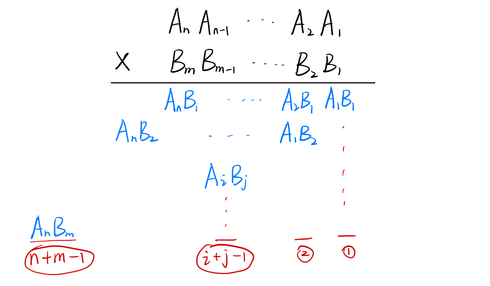

高精度运算
将大整数（考虑正数）的每一位存入数组，数组的第 0 位存个位（如果发生进位的话，在数组的末尾添上一位较为容易）。
| string a, b;
cin >> a >> b; // 用字符串的形式读入两个整数
vector<int> A, B;//再将高精度数存入数组
for (int i = a.size() - 1; i >= 0; i--) A.push_back(a[i] - '0'); // 将字符串倒着存入数组，数组的第0位存个位
for (int i = b.size() - 1; i >= 0; i--) B.push_back(b[i] - '0');
vector<int> C = f(A, B); // 将结果存入一个新的数组
for (int i = C.size() - 1; i >= 0; i--) printf("%d", C[i]); // 倒着将数组输出
|
两个高精度数的比较
也可以在“以字符串的形式读入大数”时进行比较：
| bool cmp(string &A, string &B) // 判断是否 A≥B
{
if (A.size() != B.size()) return A.size() > B.size();
for (int i = 0; i < (int)A.size() - 1; i ++)
if (A[i] != B[i]) return A[i] > B[i];
return true;
}
|
直接使用字符串函数更方便：
| bool cmp(char A[], char B[]) // A ≥ B 时返回true
{
if (strlen(A) != strlen(B)) return strlen(A) > strlen(B);
return strcmp(A, B) >= 0;
}
|
高精度加法

| vector<int> add(vector<int> &A, vector<int> &B)
{
vector<int> res;
int t = 0; // 进位初始值为0
for (int i = 0; i < A.size() || i < B.size(); i++)
{
if (i < A.size()) t += A[i];
if (i < B.size()) t += B[i]; // t = t+A[i]+B[i]
res.push_back(t % 10);
t /= 10; // 算出进位值：0或1
}
if (t) res.push_back(1); // 如果最后还进位了1，则数组需要添一位1
return res;
}
|
高精度减法

| vector<int> sub(vector<int> &A, vector<int> &B) // A≥B
{
vector<int> res;
int t = 0; // t表示借位（个位运算不会被借位，因此初始化为0）
for (int i = 0; i < A.size(); i++)
if (i < B.size())
{
res.push_back((A[i] - B[i] - t + 10) % 10);
if (A[i] - B[i] - t < 0) t = 1;
else t = 0;
}
else
{
res.push_back((A[i] - t + 10) % 10);
if (A[i] - t < 0) t = 1;
else t = 0;
}
while (res.size() > 1 && res.back() == 0) res.pop_back(); // 去除前导0
return res;
}
|
高精度乘法
大数 × 较小数

| vector<int> mul(vector<int> &A, int b)
{
vector<int> res;
int t = 0; // 进位
for (int i = 0; i < A.size(); i++) // 在A各位还没乘完的情况
{
t = A[i] * b + t;
res.push_back(t % 10);
t /= 10;
}
while (t != 0) // 进位t还没有处理完的情况
{
res.push_back(t % 10);
t /= 10;
}
while (res.size() > 1 && res.back() == 0) res.pop_back(); // 去除前导0
return res;
}
|
应用：高精度阶乘
| vector<int> f[N];
f[0] = vector<int>(1, 1); // 0! = 1
for (int i = 1; i <= 1000; i++) f[i] = mul(f[i - 1], i);
|
大数 × 大数

不考虑进位的情况下，乘数 \(A\) 的第 \(i\) 位 与乘数 \(B\) 的第 \(j\) 位 的积 只对结果的第 \(i+j-1\) 位有贡献。若从下标 0 开始存储，则 \(A[i]\times B[j]\) 将是 \(C[i+j]\) 的一部分，即：
\[
C[i + j] =\ ...+ A[i]\times B[j]+...
\]
| for (int i = 0; i < a.size(); i++)
for (int j = 0; j < b.size(); j++)
C[i + j] += A[i] * B[j];
|
可能存在 \(C_i\ge 10\)，因此需要对 \(C\) 数组进行进位操作。
| for (int i = 0; i < a.size() + b.size() - 1; i++) // 从最低位开始
if (C[i] >= 10)
{
C[i + 1] += C[i] / 10;
C[i] %= 10;
}
|
由于相乘最后可能会有进位，因此 \(n\) 位数 和 \(m\) 位数相乘得到的结果可能是 \(n+m\) 位的。
| vector<int> mul(vector<int> &A, vector<int> &B)
{
vector<int> res(A.size() + B.size());
for (int i = 0; i < A.size(); i++)
for (int j = 0; j < B.size(); j++)
res[i + j] += A[i] * B[j];
for (int i = 0; i < A.size() + B.size() - 1; i++)
if (res[i] > 9)
{
res[i + 1] += res[i] / 10;
res[i] %= 10;
}
while (res.size() > 1 && res.back() == 0) res.pop_back();
return res;
}
|
高精度除法
大数 ÷ 较小数

| vector<int> div(vector<int> &A, int b, int &r) // 返回商、余数
{
vector<int> res;
r = 0; // 余数
for (int i = A.size() - 1; i >= 0; i--) // 从被除数的最高位开始处理
{
int c = r * 10 + A[i]; // 余数与子被除数的关系
res.push_back(c / b);
r = c % b;
}
reverse(res.begin(), res.end()); // 由于主函数中会逆序输出，此处虽顺序是正确的，但也先配合主函数，逆序翻转一下
while (res.size() > 1 && res.back() == 0) res.pop_back(); // 去除前导0
return res;
}
|
如果不考虑与前面几种运算的配合，高精度除法还可以写为：
| deque<int> div(deque<int> &A, int b, int &r)
{
deque<int> res;
r = 0; // 余数
for (int i = 0; i < A.size(); i++) // 从被除数的最高位开始处理
{
r = r * 10 + A[i]; // 余数与子被除数的关系
res.push_back(r / b);
r %= b;
}
while (res.size() > 1 && res.front() == 0) res.pop_front();
return res;
}
|
高精度快速幂
a 是一个大数（用 vector 存储），计算 \(a^k\) 的低 \(p\) 位。
| vector<int> qmi(vector<int> a, int k, int p)
{
vector<int> res = vector<int>(1, 1);
while (k)
{
if (k & 1)
{
res = mul(res, a);
if (res.size() > p) res.erase(res.begin() + p, res.end());
}
a = mul(a, a);
if (a.size() > p) a.erase(a.begin() + p, a.end());
k >>= 1;
}
return res;
}
|
2024.2.3